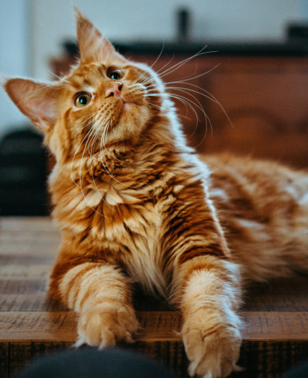

The Joys of Cat Adoption: A Guide to Bringing Home Your New Furry Friend
Adopting a cat can be a life-changing experience, offering companionship, joy, and a sense of purpose. If you're considering welcoming a feline friend into your home, here's everything you need to know about the process and benefits of cat adoption.
Table of Contents
- Why adopt a cat?
Why Adopt a Cat?
Saving Lives
By adopting from a shelter, you save a life. Shelters are often overcrowded, and adoption helps reduce the number of homeless cats. Check out the ASPCA for more information on how adoption saves lives.
